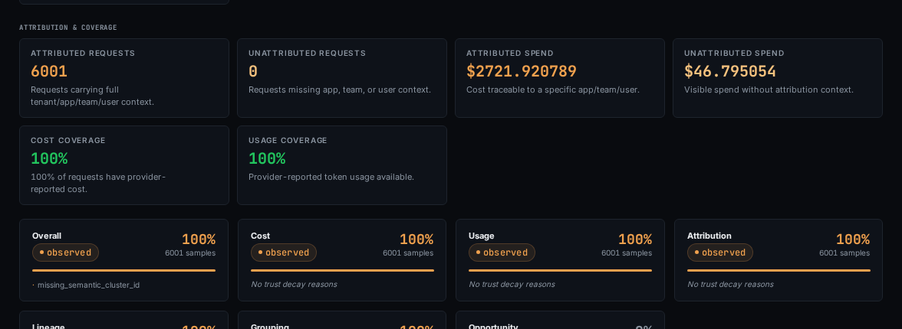

Why We Show Our Evidence
AI cost savings claims need inspectable evidence: source events, pricing basis, confidence levels, assumptions, and engineering recommendations.
A vendor tells you they can save 30% on your AI spend. Ask one question: what is that number based on? Which workflows did they analyze? Which model calls did they classify as waste? What pricing did they use? How confident are they? What assumptions did they make? What data was missing? If the answer is "we do not show that," the 30% is a guess wearing a suit.
Why black-box savings fail
- Engineering cannot prioritize.
- "Save 30%" does not tell anyone which workflow to change, which configuration to fix, or which behavior to address. A percentage is not a work order.
- Finance cannot trust it.
- A CFO who approves a tool based on projected savings expects those savings to materialize. When they do not, the tool loses credibility and so does the team that recommended it.
- The organization learns nothing.
Engineering teams have been burned by this pattern before.
Cloud cost tools that promise savings from a utilization snapshot.
Performance vendors that project improvements from synthetic benchmarks.
Optimization reports that turn assumptions into a confident dollar figure.
When the number cannot be inspected, the credibility is borrowed.
AI spend is too new and too volatile to tolerate unverifiable claims.
A savings estimate without evidence creates three problems.
AI spend forensics should build institutional knowledge about how workflows behave economically. A one-time savings number is too thin.
A black-box projection teaches nothing. An evidence chain teaches the team where waste originates and how to prevent it.
What every finding should expose
- The source events: which model calls, tool calls, and workflow steps produced the finding. Specific request IDs and event IDs an engineer can look up.
- The cost basis: observed vendor rates, imported ledger data, a bundled pricing snapshot, or user-provided pricing. Version, timestamp, and reproducible math.
- The classification: retry amplification, fallback tax, context bloat, retrieval duplication, abandoned branches, or another waste class.
- The confidence level: what evidence supports the finding, what data is missing, and which assumptions were required.
- The recommendation: what engineering should change, what impact is expected, and how to verify the fix.

A credible finding has layers. Each layer should be inspectable.
Every layer should be open.
Confidence prevents inflated claims
- High-confidence savings: backed by complete evidence and ready for prioritization.
- Medium-confidence savings: likely, but dependent on data that needs confirmation.
- Low-confidence savings: plausible, but speculative.
Confidence-gating matters because mixed certainty destroys trust.
"We can save you $40,000 per month" sounds impressive until engineering finds that $12,000 depends on assumptions that do not hold in their environment.
Confidence-gating separates what you can act on now from what needs more evidence.
That is a conversation engineering can have with finance.
Honest ranges beat inflated promises.
Why we show our work
We built Blackridge to show its work. Every finding has evidence. Every savings estimate has a confidence level. Every cost calculation has a pricing basis you can trace.
We built Blackridge to show its work because we've been on the receiving end of unverifiable vendor savings claims. Engineering trust is not optional when the numbers are going into a budget conversation.
Request an AI spend assessment and a founder will look for likely leak classes before anyone touches production.
Request assessment